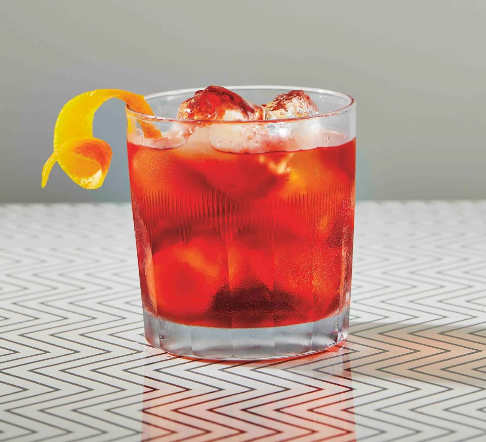

Negroni

Recipe
The classic negroni recipe with equal parts gin, campari, and vermouth. Recommended gin: Beefeater. Recommended vermouth: Martino Rosso or Carpano Antico Formula.
Ingredients
- 1 ounce gin
- 1 ounce Campari
- 1 ounce sweet vermouth
- Orange peel, to garnish
Preparation
- Add gin, Campari, and sweet vermouth to a mixing glass filled with ice and stir until chilled.
- Strain into a rocks glass filled with ice.
- Garnish with an orange peel.